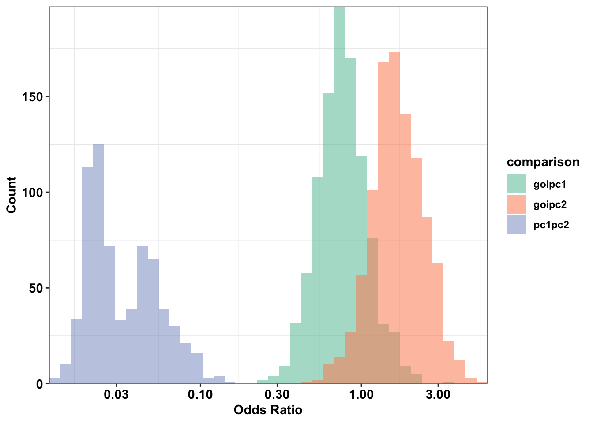
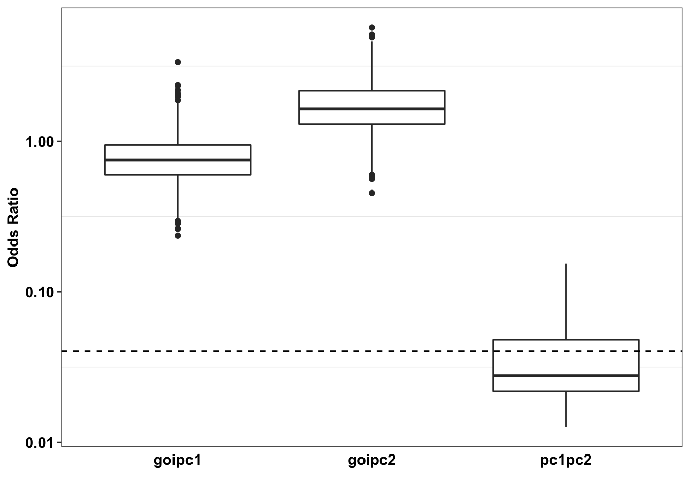
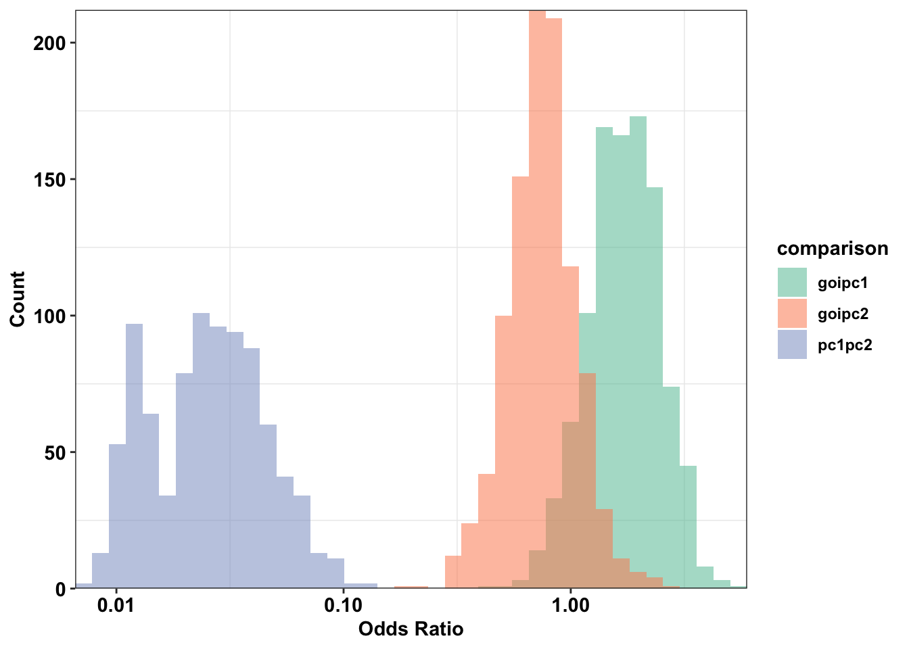
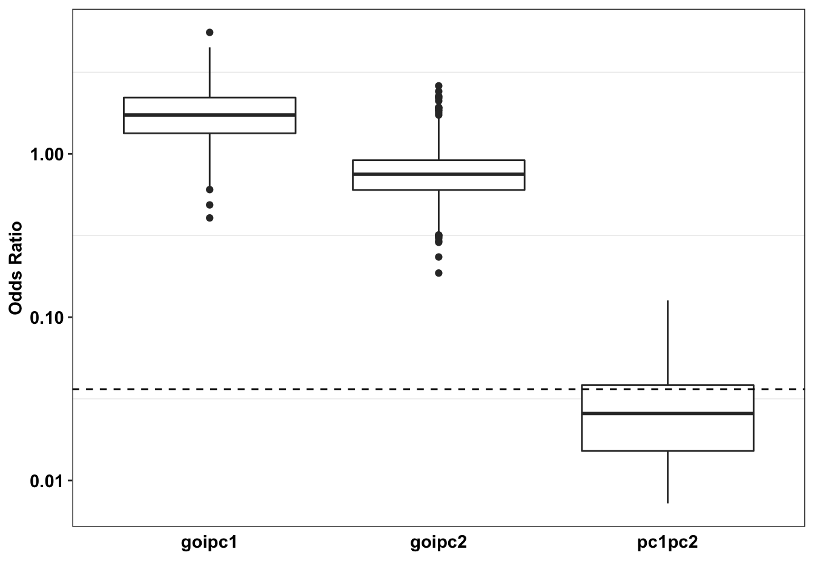

Last updated: 2021-10-21
Checks: 7 0
Knit directory: pair_con_select/
This reproducible R Markdown analysis was created with workflowr (version 1.6.2). The Checks tab describes the reproducibility checks that were applied when the results were created. The Past versions tab lists the development history.
Great! Since the R Markdown file has been committed to the Git repository, you know the exact version of the code that produced these results.
Great job! The global environment was empty. Objects defined in the global environment can affect the analysis in your R Markdown file in unknown ways. For reproduciblity it’s best to always run the code in an empty environment.
The command set.seed(20190211) was run prior to running the code in the R Markdown file. Setting a seed ensures that any results that rely on randomness, e.g. subsampling or permutations, are reproducible.
Great job! Recording the operating system, R version, and package versions is critical for reproducibility.
Nice! There were no cached chunks for this analysis, so you can be confident that you successfully produced the results during this run.
Great job! Using relative paths to the files within your workflowr project makes it easier to run your code on other machines.
Great! You are using Git for version control. Tracking code development and connecting the code version to the results is critical for reproducibility.
The results in this page were generated with repository version 4082e98. See the Past versions tab to see a history of the changes made to the R Markdown and HTML files.
Note that you need to be careful to ensure that all relevant files for the analysis have been committed to Git prior to generating the results (you can use wflow_publish or wflow_git_commit). workflowr only checks the R Markdown file, but you know if there are other scripts or data files that it depends on. Below is the status of the Git repository when the results were generated:
Ignored files:
Ignored: .DS_Store
Ignored: .Rproj.user/
Ignored: analysis/.DS_Store
Ignored: analysis/.Rproj.user/
Ignored: code/.DS_Store
Ignored: data/.DS_Store
Ignored: data/depmap_alkati/.DS_Store
Ignored: data/depmap_alkati/Data_Raw/.DS_Store
Ignored: data/depmap_alkati/Data_Raw/CCLE/CCLE_RNAseq_ExonUsageRatio_20180929.gct
Ignored: data/skmel28_sos1_mekq56p_vemurafenib.csv.sb-ea24b981-dvFz4V/
Ignored: data/tcga_brca_expression/
Ignored: data/tcga_luad_expression/
Ignored: data/tcga_skcm_expression/
Ignored: output/.DS_Store
Ignored: output/alkati_filtercutoff_allfilters.csv
Untracked files:
Untracked: analysis/Archive/
Untracked: code/archive/
Untracked: code/contab_downsampler.R
Untracked: code/contab_simulator.R
Untracked: output/Plots/
Unstaged changes:
Deleted: analysis/alkati_cell_line_tae684_response.Rmd
Modified: analysis/alkati_subsampling_simulations.Rmd
Deleted: analysis/analysis.Rproj
Modified: analysis/index.Rmd
Deleted: analysis/pairwise_comparisons_conditional_selection_simulated_cohorts.Rmd
Deleted: analysis/score_heatmap_bestoption1_newmethod.pdf
Deleted: analysis/updated_resampling_strategy.Rmd
Modified: analysis/updated_resampling_strategy2.Rmd
Deleted: analysis/updated_resampling_strategy3.Rmd
Deleted: code/README.md
Deleted: code/mut_excl_genes_datapoints.R
Deleted: code/mut_excl_genes_generator3.R
Deleted: code/quadratic_solver.R
Deleted: code/shinyfunc.R
Deleted: code/simresults_generator.R
Deleted: output/alkati_ccle_tae684_plot.pdf
Deleted: output/alkati_luad_exonimbalance.pdf
Deleted: output/alkati_mtn_pval_fig2B.pdf
Deleted: output/alkati_skcm_exonimbalance.pdf
Deleted: output/alkati_subsamplesize_orval_fig1c.pdf
Deleted: output/alkati_subsamplesize_pval_fig.pdf
Deleted: output/alkati_subsamplesize_pval_fig1c.pdf
Deleted: output/baf3_alkati_figure_deltaadjusted_doublings.pdf
Deleted: output/baf3_alkati_figure_deltaadjusted_doublings_updated.pdf
Deleted: output/baf3_barplot.pdf
Deleted: output/baf3_elisa_barplot.pdf
Deleted: output/baf3_f1174_figure_deltaadjusted_doublings.pdf
Deleted: output/egfr_luad_exonimbalance.pdf
Deleted: output/fig1c_3719_4.pdf
Deleted: output/fig1c_52219.pdf
Deleted: output/fig2b2_filtercutoff_atinras_totalalk.pdf
Deleted: output/fig2b_filtercutoff_atibraf.pdf
Deleted: output/fig2b_filtercutoff_atinras.pdf
Deleted: output/melanoma_vemurafenib_fig.pdf
Deleted: output/melanoma_vemurafenib_fig_bottom.pdf
Deleted: output/melanoma_vemurafenib_fig_top.pdf
Deleted: output/suppfig1..pdf
Deleted: output/suppfig1_52219.pdf
Deleted: paircon_boxplot_alkati.pdf
Deleted: shinyapp/code/README.md
Deleted: shinyapp/code/alldata_compiler.R
Deleted: shinyapp/code/contab_maker.R
Deleted: shinyapp/code/mut_excl_genes_datapoints.R
Deleted: shinyapp/code/mut_excl_genes_generator.R
Deleted: shinyapp/code/quadratic_solver.R
Deleted: shinyapp/code/shinyfunc.R
Deleted: shinyapp/code/simresults_generator.R
Deleted: shinyapp/rsconnect/shinyapps.io/haider-inam/shinyapp.dcf
Deleted: shinyapp/server.R
Deleted: shinyapp/ui.r
Deleted: shinyapp/www/decision_tree.png
Deleted: shinyapp/www/decision_tree_transparent.png
Deleted: shinyapp/www/logo.png
Deleted: shinyapp/www/logo2.png
Deleted: shinyapp/www/logo3.png
Deleted: shinyapp/www/logo4.png
Note that any generated files, e.g. HTML, png, CSS, etc., are not included in this status report because it is ok for generated content to have uncommitted changes.
These are the previous versions of the repository in which changes were made to the R Markdown (analysis/alkati_subsampling_simulations_2.Rmd) and HTML (docs/alkati_subsampling_simulations_2.html) files. If you’ve configured a remote Git repository (see ?wflow_git_remote), click on the hyperlinks in the table below to view the files as they were in that past version.
| File | Version | Author | Date | Message |
|---|---|---|---|---|
| Rmd | 4082e98 | haiderinam | 2021-10-21 | wflow_publish(“analysis/alkati_subsampling_simulations_2.Rmd”) |
source("code/contab_maker.R")
source("code/contab_simulator.R")
source("code/contab_downsampler.R")
source("code/alldata_compiler.R")
source("code/mut_excl_genes_generator.R")
# source("../code/contab_maker.R")
# source("../code/contab_simulator.R")
# source("../code/contab_downsampler.R")
# source("../code/alldata_compiler.R")
# source("../code/mut_excl_genes_generator.R") nameposctrl1<-'BRAF'
#Positive control 1
nameposctrl2<-'NRAS'
#Oncogene in Question
namegene<-'ATI'
#Mutation Boolean (Y or N)
mtn<-'N'
#Name Mutation for Positive Ctrl 1
nameposctrl1mt<-'V600E'
#Name of Mutation for Positive Ctrl 2
nameposctrl2mt<-'Q61L'
alldata=read.csv("output/all_data_skcm.csv",sep=",",header=T,stringsAsFactors=F)
# alldata=read.csv("../output/all_data_skcm.csv",sep=",",header=T,stringsAsFactors=F)
head(alldata) X Patid mean_RPKM_1.19 mean_RPKM_20.29 Ratio20.29 mRNA_count BRAF
1 1 TCGA-BF-A1PU 0.62445977 1.24042009 1.986389 948 V600E
2 2 TCGA-BF-A1PV 0.02099345 0.15815619 7.533598 82 NaN
3 3 TCGA-BF-A1PX 0.01752838 0.09612414 5.483914 92 V600E
4 4 TCGA-BF-A1PZ 0.19874434 7.27553619 36.607514 2822 NaN
5 5 TCGA-BF-A1Q0 2.13353636 3.71661801 1.741999 2211 NaN
6 6 TCGA-BF-A3DJ 0.06244694 0.55656239 8.912565 281 V600E
NRAS RSEM_normalized ATI
1 NaN 107.1429 0
2 Q61L 8.9659 0
3 NaN 14.5985 0
4 Q61R 329.0810 1
5 NaN 277.0434 0
6 NaN 35.1542 0# rm(list=ls())
###Not mutation specific generation of counts###
alldata_comp=alldata_compiler(alldata,nameposctrl1,nameposctrl2,namegene,'N',"N/A","N/A")[[2]]
head(alldata_comp) X Patid Positive_Ctrl1 Positive_Ctrl2 genex rndmarray
1 1 TCGA-BF-A1PU 1 0 0 0
2 2 TCGA-BF-A1PV 0 1 0 1
3 3 TCGA-BF-A1PX 1 0 0 0
4 4 TCGA-BF-A1PZ 0 1 1 0
5 5 TCGA-BF-A1Q0 0 0 0 0
6 6 TCGA-BF-A3DJ 1 0 0 0###Calculating Odds ratios and GOI frequencies for the raw data###
cohort_size=length(alldata_comp$Positive_Ctrl1)
pc1pc2_contab_counts=contab_maker(alldata_comp$Positive_Ctrl1,alldata_comp$Positive_Ctrl2,alldata_comp)[2:1, 2:1]
# pc1pc2_contab_counts=pc1new_pc2_contab
goipc1_contab_counts=contab_maker(alldata_comp$genex,alldata_comp$Positive_Ctrl1,alldata_comp)[2:1, 2:1]
# goipc1_contab_counts=goinew_pc1_contab
###Had to add the 2:1 bits because the contab maker spits out NN YY whereas we wanted YNYN
goipc2_contab_counts=contab_maker(alldata_comp$genex,alldata_comp$Positive_Ctrl2,alldata_comp)[2:1, 2:1]
# pc1pc2_contab_counts=gene_pair_2_table
# goipc1_contab_counts=contab_maker(alldata_comp$genex,alldata_comp$Positive_Ctrl1,alldata_comp)[2:1, 2:1]
# goipc1_contab_counts=gene_pair_1_table
cohort_size_curr=cohort_size
# goipc2_contab_counts=contab_maker(alldata_comp$genex,alldata_comp$Positive_Ctrl2,alldata_comp)[2:1, 2:1]
pc1pc2_contab_probabilities=pc1pc2_contab_counts/cohort_size_curr
goipc1_contab_probabilities=goipc1_contab_counts/cohort_size_curr
goipc2_contab_probabilities=goipc2_contab_counts/cohort_size_curr
# pc1pc2_contab_probabilities=pc1pc2_contab_counts
# goipc1_contab_probabilities=goipc1_contab_counts
# goipc2_contab_probabilities=goipc2_contab_counts/cohort_size
or_pc1pc2=pc1pc2_contab_probabilities[1,1]*pc1pc2_contab_probabilities[2,2]/(pc1pc2_contab_probabilities[1,2]*pc1pc2_contab_probabilities[2,1])
or_goipc1=goipc1_contab_probabilities[1,1]*goipc1_contab_probabilities[2,2]/(goipc1_contab_probabilities[1,2]*goipc1_contab_probabilities[2,1])
or_goipc2=goipc2_contab_probabilities[1,1]*goipc2_contab_probabilities[2,2]/(goipc2_contab_probabilities[1,2]*goipc2_contab_probabilities[2,1])
goi_freq=goipc1_contab_probabilities[1,1]+goipc1_contab_probabilities[1,2]
# goi_freq=.25
# class(goi_freq)
###
###Downsampling PC1 to the probability of GOI without changing ORs###
###The function below converts contingency table data to a new contingency table in which the data is downsampled to the desired frequency, aka the frequency of the GOI in this case###
pc1new_pc2_contab=contab_downsampler(pc1pc2_contab_probabilities,goi_freq)
goinew_pc1_contab=contab_downsampler(goipc1_contab_probabilities,goi_freq)
goinew_pc2_contab=contab_downsampler(goipc2_contab_probabilities,goi_freq)
##original contab:
head(pc1pc2_contab_probabilities) [,1] [,2]
[1,] 0.01424501 0.4985755
[2,] 0.25925926 0.2279202###downsampled contab:
head(pc1new_pc2_contab) [,1] [,2]
[1,] 0.003165559 0.1107946
[2,] 0.471518302 0.4145216pc1rawpc2_contabs_sims=contab_simulator(pc1pc2_contab_probabilities,1000,cohort_size_curr)
pc1pc2_contabs_sims=contab_simulator(pc1new_pc2_contab,1000,cohort_size_curr)
goipc1_contabs_sims=contab_simulator(goinew_pc1_contab,1000,cohort_size_curr)
goipc2_contabs_sims=contab_simulator(goinew_pc2_contab,1000,cohort_size_curr)
# goipc2_contabs_sims=contab_simulator(goinew_pc2_contab,1000,cohort_size)
# head(pc1pc2_contabs_sims) #each row in this dataset is a new contab
pc1rawpc2_contabs_sims=data.frame(pc1rawpc2_contabs_sims)
pc1rawpc2_contabs_sims=pc1rawpc2_contabs_sims%>%
mutate(or=p11*p00/(p10*p01))
pc1pc2_contabs_sims=data.frame(pc1pc2_contabs_sims)
pc1pc2_contabs_sims=pc1pc2_contabs_sims%>%
mutate(or=p11*p00/(p10*p01))
goipc1_contabs_sims=data.frame(goipc1_contabs_sims)
goipc1_contabs_sims=goipc1_contabs_sims%>%
mutate(or=p11*p00/(p10*p01))
goipc2_contabs_sims=data.frame(goipc2_contabs_sims)
goipc2_contabs_sims=goipc2_contabs_sims%>%
mutate(or=p11*p00/(p10*p01))
# goipc2_contabs_sims=data.frame(goipc2_contabs_sims)
# goipc2_contabs_sims=goipc2_contabs_sims%>%
# mutate(or=p11*p00/(p10*p01))
pc1rawpc2_contabs_sims$comparison="pc1rawpc2"
pc1pc2_contabs_sims$comparison="pc1pc2"
goipc1_contabs_sims$comparison="goipc1"
goipc2_contabs_sims$comparison="goipc2"
or_median_raw=quantile(pc1rawpc2_contabs_sims$or,na.rm = T)[3]
or_uq_raw=quantile(pc1rawpc2_contabs_sims$or,na.rm = T)[4]
or_median_downsampled=quantile(pc1pc2_contabs_sims$or,na.rm = T)[3]
or_uq_downsampled=quantile(pc1pc2_contabs_sims$or,na.rm = T)[4]
pc1rawpc2_contabs_sims=pc1rawpc2_contabs_sims%>%
mutate(isgreater_raw_median=case_when(or>or_median_raw~1,
TRUE~0),
isgreater_raw_uq=case_when(or>or_uq_raw~1,
TRUE~0),
isgreater_median=case_when(or>or_median_downsampled~1,
TRUE~0),
isgreater_uq=case_when(or>or_uq_downsampled~1,
TRUE~0)
)
pc1pc2_contabs_sims=pc1pc2_contabs_sims%>%
mutate(isgreater_raw_median=case_when(or>or_median_raw~1,
TRUE~0),
isgreater_raw_uq=case_when(or>or_uq_raw~1,
TRUE~0),
isgreater_median=case_when(or>or_median_downsampled~1,
TRUE~0),
isgreater_uq=case_when(or>or_uq_downsampled~1,
TRUE~0)
)
goipc1_contabs_sims=goipc1_contabs_sims%>%
mutate(isgreater_raw_median=case_when(or>or_median_raw~1,
TRUE~0),
isgreater_raw_uq=case_when(or>or_uq_raw~1,
TRUE~0),
isgreater_median=case_when(or>or_median_downsampled~1,
TRUE~0),
isgreater_uq=case_when(or>or_uq_downsampled~1,
TRUE~0)
)
goipc2_contabs_sims=goipc2_contabs_sims%>%
mutate(isgreater_raw_median=case_when(or>or_median_raw~1,
TRUE~0),
isgreater_raw_uq=case_when(or>or_uq_raw~1,
TRUE~0),
isgreater_median=case_when(or>or_median_downsampled~1,
TRUE~0),
isgreater_uq=case_when(or>or_uq_downsampled~1,
TRUE~0)
)
# pc1pc2_contabs_sims=pc1pc2_contabs_sims%>%
# mutate(isgreater=case_when(or>=or_pc1pc2~1,
# TRUE~0))
# goipc1_contabs_sims=goipc1_contabs_sims%>%
# mutate(isgreater=case_when(or>=or_pc1pc2~1,
# TRUE~0))
# goipc2_contabs_sims=goipc2_contabs_sims%>%
# mutate(isgreater=case_when(or>=or_pc1pc2~1,
# TRUE~0))
pc1rawpc2_isgreater_raw_median=sum(pc1rawpc2_contabs_sims$isgreater_raw_median)
pc1rawpc2_isgreater_raw_uq=sum(pc1rawpc2_contabs_sims$isgreater_raw_uq)
pc1rawpc2_isgreater_median=sum(pc1rawpc2_contabs_sims$isgreater_median)
pc1rawpc2_isgreater_uq=sum(pc1rawpc2_contabs_sims$isgreater_uq)
pc1pc2_isgreater_raw_median=sum(pc1pc2_contabs_sims$isgreater_raw_median)
pc1pc2_isgreater_raw_uq=sum(pc1pc2_contabs_sims$isgreater_raw_uq)
pc1pc2_isgreater_median=sum(pc1pc2_contabs_sims$isgreater_median)
pc1pc2_isgreater_uq=sum(pc1pc2_contabs_sims$isgreater_uq)
goipc1_isgreater_raw_median=sum(goipc1_contabs_sims$isgreater_raw_median)
goipc1_isgreater_raw_uq=sum(goipc1_contabs_sims$isgreater_raw_uq)
goipc1_isgreater_median=sum(goipc1_contabs_sims$isgreater_median)
goipc1_isgreater_uq=sum(goipc1_contabs_sims$isgreater_uq)
plotting_df=rbind(pc1pc2_contabs_sims,goipc1_contabs_sims,goipc2_contabs_sims)
# plotting_df=rbind(pc1pc2_contabs_sims,goipc1_contabs_sims)
#
ggplot(plotting_df,aes(x=(or),fill=comparison))+
geom_histogram(bins=40,alpha=0.55,position="identity")+
# geom_histogram(bins=50,alpha=0.55)+
scale_y_continuous(expand=c(0,0),name="Count")+
scale_x_continuous(expand=c(0,0),trans="log10",name="Odds Ratio")+
scale_fill_brewer(palette="Set2")+
# geom_vline(xintercept = or_pc1pc2)+
cleanupWarning: Transformation introduced infinite values in continuous x-axisWarning: Removed 320 rows containing non-finite values (stat_bin).
ggplot(plotting_df,aes(y=(or),x=comparison),fill=factor(comparison))+
geom_boxplot()+
scale_y_continuous(name="Odds Ratio",trans="log10")+
scale_x_discrete(name="")+
scale_fill_brewer(palette="Set2")+
geom_hline(yintercept = or_uq_downsampled,linetype="dashed")+
cleanup+
theme(legend.position = "none",
axis.ticks.x = element_blank())Warning: Transformation introduced infinite values in continuous y-axisWarning: Removed 320 rows containing non-finite values (stat_boxplot).
# ggsave("paircon_boxplot.pdf",width = 3,height=2,units="in",useDingbats=F) nameposctrl1<-'NRAS'
#Positive control 1
nameposctrl2<-'BRAF'
#Oncogene in Question
namegene<-'ATI'
#Mutation Boolean (Y or N)
mtn<-'N'
#Name Mutation for Positive Ctrl 1
nameposctrl1mt<-'Q61L'
#Name of Mutation for Positive Ctrl 2
nameposctrl2mt<-'V600E'
alldata=read.csv("output/all_data_skcm.csv",sep=",",header=T,stringsAsFactors=F)
# alldata=read.csv("../output/all_data_skcm.csv",sep=",",header=T,stringsAsFactors=F)
head(alldata) X Patid mean_RPKM_1.19 mean_RPKM_20.29 Ratio20.29 mRNA_count BRAF
1 1 TCGA-BF-A1PU 0.62445977 1.24042009 1.986389 948 V600E
2 2 TCGA-BF-A1PV 0.02099345 0.15815619 7.533598 82 NaN
3 3 TCGA-BF-A1PX 0.01752838 0.09612414 5.483914 92 V600E
4 4 TCGA-BF-A1PZ 0.19874434 7.27553619 36.607514 2822 NaN
5 5 TCGA-BF-A1Q0 2.13353636 3.71661801 1.741999 2211 NaN
6 6 TCGA-BF-A3DJ 0.06244694 0.55656239 8.912565 281 V600E
NRAS RSEM_normalized ATI
1 NaN 107.1429 0
2 Q61L 8.9659 0
3 NaN 14.5985 0
4 Q61R 329.0810 1
5 NaN 277.0434 0
6 NaN 35.1542 0# rm(list=ls())
###Not mutation specific generation of counts###
alldata_comp=alldata_compiler(alldata,nameposctrl1,nameposctrl2,namegene,'N',"N/A","N/A")[[2]]
head(alldata_comp) X Patid Positive_Ctrl1 Positive_Ctrl2 genex rndmarray
1 1 TCGA-BF-A1PU 0 1 0 0
2 2 TCGA-BF-A1PV 1 0 0 0
3 3 TCGA-BF-A1PX 0 1 0 0
4 4 TCGA-BF-A1PZ 1 0 1 0
5 5 TCGA-BF-A1Q0 0 0 0 0
6 6 TCGA-BF-A3DJ 0 1 0 1###Calculating Odds ratios and GOI frequencies for the raw data###
cohort_size=length(alldata_comp$Positive_Ctrl1)
pc1pc2_contab_counts=contab_maker(alldata_comp$Positive_Ctrl1,alldata_comp$Positive_Ctrl2,alldata_comp)[2:1, 2:1]
# pc1pc2_contab_counts=pc1new_pc2_contab
goipc1_contab_counts=contab_maker(alldata_comp$genex,alldata_comp$Positive_Ctrl1,alldata_comp)[2:1, 2:1]
# goipc1_contab_counts=goinew_pc1_contab
###Had to add the 2:1 bits because the contab maker spits out NN YY whereas we wanted YNYN
goipc2_contab_counts=contab_maker(alldata_comp$genex,alldata_comp$Positive_Ctrl2,alldata_comp)[2:1, 2:1]
# pc1pc2_contab_counts=gene_pair_2_table
# goipc1_contab_counts=contab_maker(alldata_comp$genex,alldata_comp$Positive_Ctrl1,alldata_comp)[2:1, 2:1]
# goipc1_contab_counts=gene_pair_1_table
cohort_size_curr=cohort_size
# goipc2_contab_counts=contab_maker(alldata_comp$genex,alldata_comp$Positive_Ctrl2,alldata_comp)[2:1, 2:1]
pc1pc2_contab_probabilities=pc1pc2_contab_counts/cohort_size_curr
goipc1_contab_probabilities=goipc1_contab_counts/cohort_size_curr
goipc2_contab_probabilities=goipc2_contab_counts/cohort_size_curr
# pc1pc2_contab_probabilities=pc1pc2_contab_counts
# goipc1_contab_probabilities=goipc1_contab_counts
# goipc2_contab_probabilities=goipc2_contab_counts/cohort_size
or_pc1pc2=pc1pc2_contab_probabilities[1,1]*pc1pc2_contab_probabilities[2,2]/(pc1pc2_contab_probabilities[1,2]*pc1pc2_contab_probabilities[2,1])
or_goipc1=goipc1_contab_probabilities[1,1]*goipc1_contab_probabilities[2,2]/(goipc1_contab_probabilities[1,2]*goipc1_contab_probabilities[2,1])
or_goipc2=goipc2_contab_probabilities[1,1]*goipc2_contab_probabilities[2,2]/(goipc2_contab_probabilities[1,2]*goipc2_contab_probabilities[2,1])
goi_freq=goipc1_contab_probabilities[1,1]+goipc1_contab_probabilities[1,2]
# goi_freq=.25
# class(goi_freq)
###
###Downsampling PC1 to the probability of GOI without changing ORs###
###The function below converts contingency table data to a new contingency table in which the data is downsampled to the desired frequency, aka the frequency of the GOI in this case###
pc1new_pc2_contab=contab_downsampler(pc1pc2_contab_probabilities,goi_freq)
goinew_pc1_contab=contab_downsampler(goipc1_contab_probabilities,goi_freq)
goinew_pc2_contab=contab_downsampler(goipc2_contab_probabilities,goi_freq)
##original contab:
head(pc1pc2_contab_probabilities) [,1] [,2]
[1,] 0.01424501 0.2592593
[2,] 0.49857550 0.2279202###downsampled contab:
head(pc1new_pc2_contab) [,1] [,2]
[1,] 0.005935423 0.1080247
[2,] 0.608066588 0.2779733pc1rawpc2_contabs_sims=contab_simulator(pc1pc2_contab_probabilities,1000,cohort_size_curr)
pc1pc2_contabs_sims=contab_simulator(pc1new_pc2_contab,1000,cohort_size_curr)
goipc1_contabs_sims=contab_simulator(goinew_pc1_contab,1000,cohort_size_curr)
goipc2_contabs_sims=contab_simulator(goinew_pc2_contab,1000,cohort_size_curr)
# goipc2_contabs_sims=contab_simulator(goinew_pc2_contab,1000,cohort_size)
# head(pc1pc2_contabs_sims) #each row in this dataset is a new contab
pc1rawpc2_contabs_sims=data.frame(pc1rawpc2_contabs_sims)
pc1rawpc2_contabs_sims=pc1rawpc2_contabs_sims%>%
mutate(or=p11*p00/(p10*p01))
pc1pc2_contabs_sims=data.frame(pc1pc2_contabs_sims)
pc1pc2_contabs_sims=pc1pc2_contabs_sims%>%
mutate(or=p11*p00/(p10*p01))
goipc1_contabs_sims=data.frame(goipc1_contabs_sims)
goipc1_contabs_sims=goipc1_contabs_sims%>%
mutate(or=p11*p00/(p10*p01))
goipc2_contabs_sims=data.frame(goipc2_contabs_sims)
goipc2_contabs_sims=goipc2_contabs_sims%>%
mutate(or=p11*p00/(p10*p01))
# goipc2_contabs_sims=data.frame(goipc2_contabs_sims)
# goipc2_contabs_sims=goipc2_contabs_sims%>%
# mutate(or=p11*p00/(p10*p01))
pc1rawpc2_contabs_sims$comparison="pc1rawpc2"
pc1pc2_contabs_sims$comparison="pc1pc2"
goipc1_contabs_sims$comparison="goipc1"
goipc2_contabs_sims$comparison="goipc2"
or_median_raw=quantile(pc1rawpc2_contabs_sims$or,na.rm = T)[3]
or_uq_raw=quantile(pc1rawpc2_contabs_sims$or,na.rm = T)[4]
or_median_downsampled=quantile(pc1pc2_contabs_sims$or,na.rm = T)[3]
or_uq_downsampled=quantile(pc1pc2_contabs_sims$or,na.rm = T)[4]
pc1rawpc2_contabs_sims=pc1rawpc2_contabs_sims%>%
mutate(isgreater_raw_median=case_when(or>or_median_raw~1,
TRUE~0),
isgreater_raw_uq=case_when(or>or_uq_raw~1,
TRUE~0),
isgreater_median=case_when(or>or_median_downsampled~1,
TRUE~0),
isgreater_uq=case_when(or>or_uq_downsampled~1,
TRUE~0)
)
pc1pc2_contabs_sims=pc1pc2_contabs_sims%>%
mutate(isgreater_raw_median=case_when(or>or_median_raw~1,
TRUE~0),
isgreater_raw_uq=case_when(or>or_uq_raw~1,
TRUE~0),
isgreater_median=case_when(or>or_median_downsampled~1,
TRUE~0),
isgreater_uq=case_when(or>or_uq_downsampled~1,
TRUE~0)
)
goipc1_contabs_sims=goipc1_contabs_sims%>%
mutate(isgreater_raw_median=case_when(or>or_median_raw~1,
TRUE~0),
isgreater_raw_uq=case_when(or>or_uq_raw~1,
TRUE~0),
isgreater_median=case_when(or>or_median_downsampled~1,
TRUE~0),
isgreater_uq=case_when(or>or_uq_downsampled~1,
TRUE~0)
)
goipc2_contabs_sims=goipc2_contabs_sims%>%
mutate(isgreater_raw_median=case_when(or>or_median_raw~1,
TRUE~0),
isgreater_raw_uq=case_when(or>or_uq_raw~1,
TRUE~0),
isgreater_median=case_when(or>or_median_downsampled~1,
TRUE~0),
isgreater_uq=case_when(or>or_uq_downsampled~1,
TRUE~0)
)
# pc1pc2_contabs_sims=pc1pc2_contabs_sims%>%
# mutate(isgreater=case_when(or>=or_pc1pc2~1,
# TRUE~0))
# goipc1_contabs_sims=goipc1_contabs_sims%>%
# mutate(isgreater=case_when(or>=or_pc1pc2~1,
# TRUE~0))
# goipc2_contabs_sims=goipc2_contabs_sims%>%
# mutate(isgreater=case_when(or>=or_pc1pc2~1,
# TRUE~0))
pc1rawpc2_isgreater_raw_median=sum(pc1rawpc2_contabs_sims$isgreater_raw_median)
pc1rawpc2_isgreater_raw_uq=sum(pc1rawpc2_contabs_sims$isgreater_raw_uq)
pc1rawpc2_isgreater_median=sum(pc1rawpc2_contabs_sims$isgreater_median)
pc1rawpc2_isgreater_uq=sum(pc1rawpc2_contabs_sims$isgreater_uq)
pc1pc2_isgreater_raw_median=sum(pc1pc2_contabs_sims$isgreater_raw_median)
pc1pc2_isgreater_raw_uq=sum(pc1pc2_contabs_sims$isgreater_raw_uq)
pc1pc2_isgreater_median=sum(pc1pc2_contabs_sims$isgreater_median)
pc1pc2_isgreater_uq=sum(pc1pc2_contabs_sims$isgreater_uq)
goipc1_isgreater_raw_median=sum(goipc1_contabs_sims$isgreater_raw_median)
goipc1_isgreater_raw_uq=sum(goipc1_contabs_sims$isgreater_raw_uq)
goipc1_isgreater_median=sum(goipc1_contabs_sims$isgreater_median)
goipc1_isgreater_uq=sum(goipc1_contabs_sims$isgreater_uq)
plotting_df=rbind(pc1pc2_contabs_sims,goipc1_contabs_sims,goipc2_contabs_sims)
# plotting_df=rbind(pc1pc2_contabs_sims,goipc1_contabs_sims)
#
ggplot(plotting_df,aes(x=(or),fill=comparison))+
geom_histogram(bins=40,alpha=0.55,position="identity")+
# geom_histogram(bins=50,alpha=0.55)+
scale_y_continuous(expand=c(0,0),name="Count")+
scale_x_continuous(expand=c(0,0),trans="log10",name="Odds Ratio")+
scale_fill_brewer(palette="Set2")+
# geom_vline(xintercept = or_pc1pc2)+
cleanupWarning: Transformation introduced infinite values in continuous x-axisWarning: Removed 116 rows containing non-finite values (stat_bin).
ggplot(plotting_df,aes(y=(or),x=comparison),fill=factor(comparison))+
geom_boxplot()+
scale_y_continuous(name="Odds Ratio",trans="log10")+
scale_x_discrete(name="")+
scale_fill_brewer(palette="Set2")+
geom_hline(yintercept = or_uq_downsampled,linetype="dashed")+
cleanup+
theme(legend.position = "none",
axis.ticks.x = element_blank())Warning: Transformation introduced infinite values in continuous y-axisWarning: Removed 116 rows containing non-finite values (stat_boxplot).
# ggsave("paircon_boxplot.pdf",width = 3,height=2,units="in",useDingbats=F)
sessionInfo()R version 4.0.0 (2020-04-24)
Platform: x86_64-apple-darwin17.0 (64-bit)
Running under: macOS 10.16
Matrix products: default
BLAS: /Library/Frameworks/R.framework/Versions/4.0/Resources/lib/libRblas.dylib
LAPACK: /Library/Frameworks/R.framework/Versions/4.0/Resources/lib/libRlapack.dylib
locale:
[1] en_US.UTF-8/en_US.UTF-8/en_US.UTF-8/C/en_US.UTF-8/en_US.UTF-8
attached base packages:
[1] parallel grid stats graphics grDevices utils datasets
[8] methods base
other attached packages:
[1] BiocManager_1.30.10 plotly_4.9.2.1 ggsignif_0.6.0
[4] devtools_2.3.0 usethis_1.6.1 RColorBrewer_1.1-2
[7] reshape2_1.4.4 ggplot2_3.3.3 doParallel_1.0.15
[10] iterators_1.0.12 foreach_1.5.0 dplyr_1.0.6
[13] VennDiagram_1.6.20 futile.logger_1.4.3 tictoc_1.0
[16] knitr_1.28 workflowr_1.6.2
loaded via a namespace (and not attached):
[1] Rcpp_1.0.4.6 tidyr_1.1.3 prettyunits_1.1.1
[4] ps_1.3.3 assertthat_0.2.1 rprojroot_1.3-2
[7] digest_0.6.25 utf8_1.1.4 R6_2.4.1
[10] plyr_1.8.6 futile.options_1.0.1 backports_1.1.7
[13] evaluate_0.14 httr_1.4.2 pillar_1.6.1
[16] rlang_0.4.11 lazyeval_0.2.2 data.table_1.12.8
[19] whisker_0.4 callr_3.7.0 rmarkdown_2.8
[22] labeling_0.3 desc_1.2.0 stringr_1.4.0
[25] htmlwidgets_1.5.1 munsell_0.5.0 compiler_4.0.0
[28] httpuv_1.5.2 xfun_0.22 pkgconfig_2.0.3
[31] pkgbuild_1.0.8 htmltools_0.4.0 tidyselect_1.1.0
[34] tibble_3.1.2 codetools_0.2-16 viridisLite_0.3.0
[37] fansi_0.4.1 crayon_1.4.1 withr_2.4.2
[40] later_1.0.0 jsonlite_1.7.2 gtable_0.3.0
[43] lifecycle_1.0.0 DBI_1.1.0 git2r_0.27.1
[46] magrittr_2.0.1 formatR_1.7 scales_1.1.1
[49] cli_2.5.0 stringi_1.4.6 farver_2.0.3
[52] fs_1.4.1 promises_1.1.0 remotes_2.1.1
[55] testthat_2.3.2 ellipsis_0.3.2 generics_0.0.2
[58] vctrs_0.3.8 lambda.r_1.2.4 tools_4.0.0
[61] glue_1.4.1 purrr_0.3.4 processx_3.5.2
[64] pkgload_1.0.2 yaml_2.2.1 colorspace_1.4-1
[67] sessioninfo_1.1.1 memoise_1.1.0